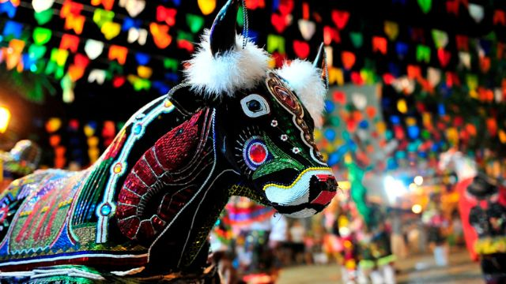
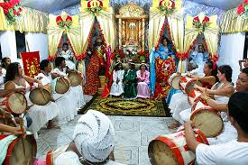

Descubra as principais
festas populares no Maranhão
As festas do Maranhão tem grandes influências de matrizes africanas de um periodo mais antigo da história.
FESTAS POPULARES
A cultura maranhense é um mosaico vibrante e multifacetado que reflete a rica história e a diversidade
étnica do estado do Maranhão, localizado no nordeste do Brasil. Conhecida por suas festas tradicionais,
a cultura do Maranhão é fortemente influenciada por elementos indígenas, africanos e europeus. Entre os
destaques culturais estão o Bumba Meu Boi, uma das mais emblemáticas manifestações folclóricas do
Brasil, e o Tambor de Crioula, dança de origem africana que celebra a resistência e a herança cultural
dos escravizados.
Aqui vai uma lista das maiores festas presentes no Maranhão:
- 1.Bumba Meu Boi:
Uma das manifestações culturais mais emblemáticas do Maranhão. Realizada entre junho e julho, com diversos sotaques (estilos), como o sotaque de matraca, orquestra, baixada, zabumba, e costa de mão.
 - 2.Festa do Divino Espírito Santo:
elebrada em diversas cidades do estado, especialmente em Alcântara. Acontece entre maio e junho, com rituais religiosos e eventos festivos, incluindo danças, cantorias e banquetes comunitários.
 - 3.São João do Maranhão:
Ocorre durante todo o mês de junho. Inclui quadrilhas juninas, danças do boi, cacuriá, danças portuguesas, e fogueiras.

- 4.Tambor de Crioula:
Celebração de origem africana em homenagem a São Benedito. Realizada principalmente em festas religiosas e profanas, com cantos e danças acompanhadas de tambores.